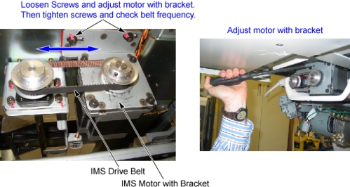

Operating Documentation
Direction 5193574-800, Rev# 22
LightSpeed 7.X Service Methods
Module Version 2.0, Version Date 2/10/15
Operating Documentation |
| Required Persons | Preliminary Reqs | Procedure | Finalization |
|---|---|---|---|
| 1 |
| Last Revised: | January 20, 2015 |
| Item | Qty | Effectivity | Part# | Manufacturer | |
|---|---|---|---|---|---|
| Gates Sonic Tension Meter (507C) or Equivalent | 1 | - | - | - | |
| Condition | Reference | Effectivity |
|---|
Turn the Tension meter on.
For the Gates Sonic Tension Meter model 507 C, press the Measure button and then press the Hz button. The green LED will be flashing. For an equivalent meter, make sure it is setup to measure frequency.
Raise the table to maximum height.
Move the cradle and IMS to out limit position.
Remove power from the table by turning off 120VAC, Axial Drive and HVDC switches on Service Switch Panel.
Remove the following Table covers:
Top Cover (Right/Left)
IMS Side Cover (Right/Left)
IMS Cover Rear
Illustration 1: Table Covers

Disconnect the cable connector of the tape switch.
Illustration 2: Tape Switches

Remove the pump upper cover as follows:
To make re-installation easier, mark the position of pump upper cover on both sides by outlining the edge with a maker or pencil.
Disconnect the cable connectors of the tape switches and touch sensors.
Remove six (6) screws holding the both sides of the pump upper cover, and remove it.
Illustration 3: Pump Upper Cover Removal

Remove IMS motor cover.
Illustration 4: IMS Motor Cover, IMS Drive Belt

Illustration 5: IMS Drive Belt

If the clean damper is mounted on the IMS Motor Shaft, it will need to be removed to access the IMS Drive Belt. Remove the clean damper by loosening the two setscrews on the backside of the clean damper. Note the orientation of the setscrews on the shaft for replacement.
Illustration 6: Clean Damper

Illustration 7: Clean Damper Installation

Hold the tension meter sensor half way on the middle of the upper side of belt, and lightly strum the top of the IMS belt in the middle of the belt span to make it vibrate. Measure the frequency and procedure.
| NOTE: | The closer the meters sensor is to the belt without touching,
the better the reading will be. A waveform graphic will show up on the LCD screen. After the signal is processed properly, the belt frequency will appear on the screen and a successful measurement on the Gates meter will beep 3 times, and the green LED turns on steady to indicate a successful reading. Adjust Belt Tension in small increments. If the frequency is high, loosen the belt. If the frequency is low, tighten the belt. |
Compare measurement value to the IMS belt frequency spec of (Between 100 and 140 HZ).
If frequency is out of spec, proceed to the following sub steps:
Loosen 2 screws on IMS motor bracket. Tighten belt by using flat head screwdriver to push motor bracket assembly. Tighten 2 screws securely while keeping tension on the belt.
Illustration 8: IMS Belt Tension Adjustment

Continue to adjust belt and measure frequency until it is within spec.
If you removed the clean damper earlier in the procedure, please re-install it on the IMS Motor Shaft. Please refer back to step Step 9 for proper installation.
IMS belt adjustments are complete at this time. IMS covers can be re-installed at this point.
Power up the table from the service Switch Panel in gantry.
Move the cradle and IMS in and out completely 10 cycles, and verify that table movement is operating normally.
Remove power from the table by turning off 120VAC, Axial Drive and HVDC switches on Service Switch Panel.
Re-install the Table covers.